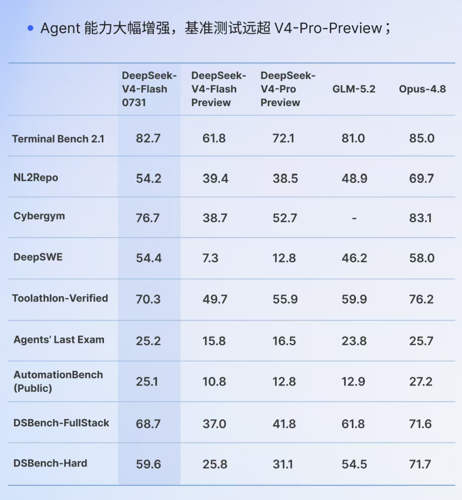
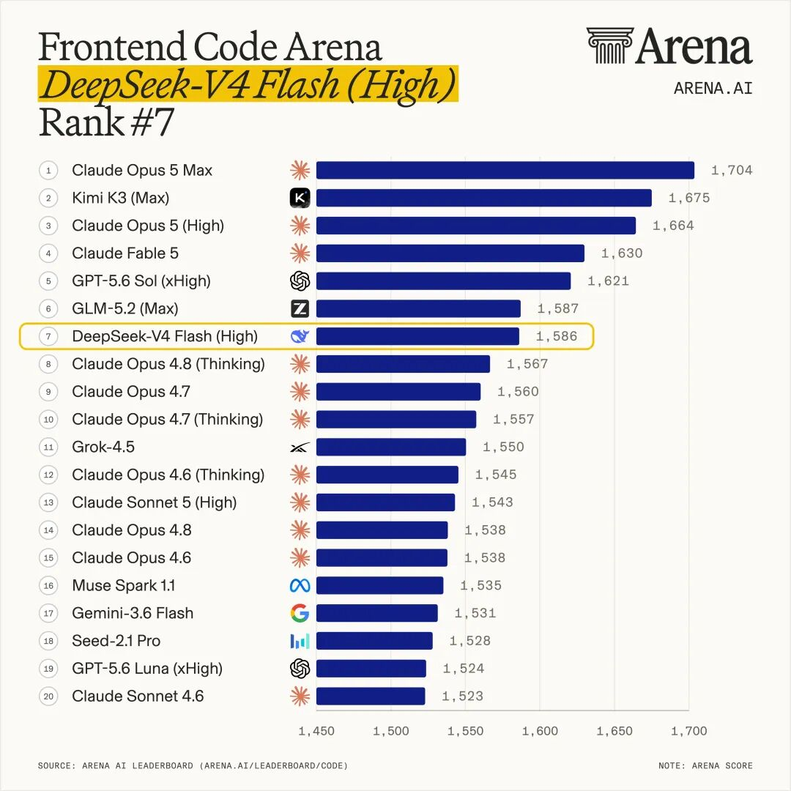
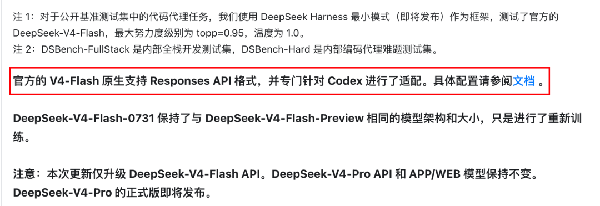
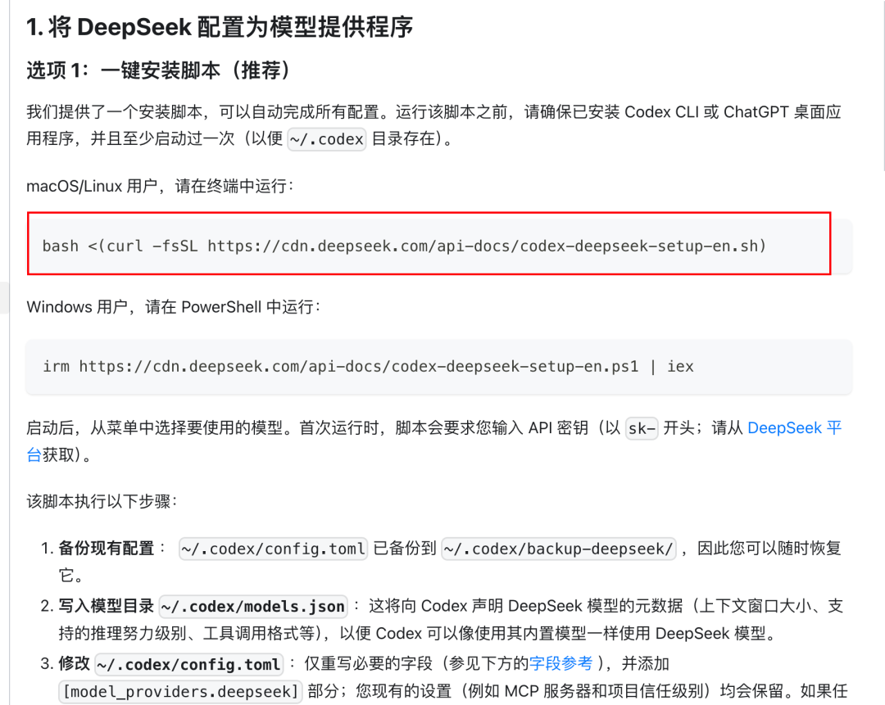

前天DeepSeek悄悄发布了V4 Flash正式版，据说Agent能力大幅提升，甚至远超 V4-Pro-Preview。


而且在Arena最新的前端代码能力排名中，DeepSeek V4 Flash排到了全球第7，开源第三，仅次于GLM-5.2。
关键是官方直言DeepSeek V4 Flash对Codex做了适配。

关键我看了一下，居然只要一条指令，就能切换，而且还能丝滑的切回。
接入Codex超级简单，DeepSeek都已经帮你打包好指令了。
只需要复制到终端执行一下，然后选择1，再填个apikey，重启一下Codex就完事了

PS：切回就是再次执行这条指令，选择3即可。
DeepSeek V4 Flash的能力到底怎么样？这条视频将把DeepSeek V4 Flash接入Codex，进行测试。
第一次做测评的视频，希望大家给点建议，顺便三连😄
实测下来，确实被DeepSeek V4 Flash正式版惊到了，我原本以为会拉。
结果它彻底打破了我对传统Flash模型的认知，Flash模型也能这么强？（已经接近国内最强那批旗舰模型了）
而且巨便宜，用仓颉Skill蒸馏一本书只要8毛！我之前用别的模型，甚至是订阅Plan，算下来至少都是10元。
而且这可能是目前接入Codex体验最丝滑的模型（除GPT-5.6外），适配的真的很好：
1、不会随便断开，之前用一些开源工具接入其他模型，经常会断，体验不好；
2、工作过程中的输出，跟原生的一样，如果你让我光看输出这部分，几乎看不出换了模型。
这让我无比期待即将发布的DeepSeek V4 Pro正式版，估计会是一个里程碑的模型。
可惜DeepSeek V4 Flash还没有视觉能力，没法使用Codex最好用的Computer Use能力。
不过这块大家可以试试字节最近新出的Seed-Evolving模型，视觉能力绝对是世界一流。
顶级视觉能力
袋鼠帝，公众号：袋鼠帝AI客栈告别版本号！豆包首款无限进步模型：Seed-Evolving实测
最后，说点题外话，这条视频收到的第一个建议是下面这个
这么一说，好像是有点der B啊🤣。我改！
现在流行啥呢，是不是像Tim这样，加问号🤔
他也吃惊了，只不过没我的夸张。
懂了，下次用：问号+小吃惊
我是袋鼠帝，一个致力于帮你把AI变成生产力的博主。我们下期见。
能看到这里的都是凤毛麟角的存在！
如果觉得不错，随手点个赞、在看、转发三连吧~
如果想第一时间收到推送，也可以给我个星标⭐
谢谢你耐心看完我的文章～